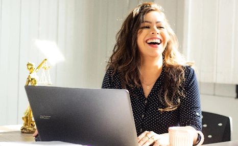
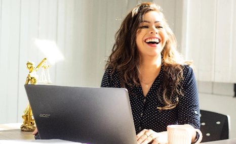

A propos de moi
Devenir photographe était pour moi une évidence. Comme si j’y étais prédestiné. Saisir un moment, une émotion, une situation, un endroit, une lumière et les rendre immortels, voilà ce qui me fait vibrer.
Nous passons notre vie à chercher le bonheur, et lorsque nous y touchons, nous n’avons qu’une envie : le figer au travers de photographies pour le savourer avec les personnes qui sont importantes à nos yeux, ou le partager au plus grand nombre. C’est ce que je vous propose : saisir ces merveilleux moments au travers de mon regard, mon approche, ma technique. Rendre ces moments immortels, afin que vous puissiez y puiser de l’amour, du bonheur, de la tendresse et de lumière à chaque fois que vous poserez les yeux sur vos photos.
Photographe mariage
En tant que photographe mariage, j'aime capturer les moments précieux et les émotions authentiques de chaque couple. Chaque mariage est unique et je m'efforce de créer des souvenirs inoubliables à travers mes photos. L'expression de l'amour et de la complicité entre les mariés est ce qui me motive à exercer ce métier passionnant. Rien ne me rend plus heureux que de figer ces instants magiques pour que les couples puissent les chérir pour toujours.
Photographe culinaire
En ma qualité de photographe culinaire, j'ai le privilège de fusionner deux de mes passions : la photographie et la gastronomie. Immortaliser la splendeur des plats, jouer avec la lumière et les couleurs pour magnifier chaque détail, voilà ce qui me motive dans mon travail. Chaque séance photo est une nouvelle aventure gustative où je m'efforce de sublimer les créations des chefs et des cuisiniers. Rien n'est plus gratifiant que de voir mes photos éveiller l'appétit et susciter des émotions chez ceux qui les admirent.
Photographe grossesse
À la recherche d'un photographe spécialisé dans les séances de grossesse pour capturer ces moments magiques et uniques ? Je saurai mettre en valeur votre ventre arrondi et l'amour qui grandit en vous. Grâce à mon expertise et ma sensibilité, je saurai immortaliser ce moment précieux de votre vie avec des clichés empreints d'émotion et de douceur. N'hésitez pas à me contacter pour créer des souvenirs inoubliables de cette période si particulière.
Portfolio
 
Un portrait n’est pas une ressemblance. Dès lors qu’une émotion ou qu’un fait est traduit en photo, il cesse d’être un fait pour devenir une opinion. L’inexactitude n’existe pas en photographie. Toutes les photos sont exactes. Aucune d’elles n’est la vérité.
Mes services
Shooting photo
Pour capturer vos moments les plus précieux et garder un souvenir impérissable. Je me déplace en Île-de-France pour réaliser vos photos
350€/demi journée
Matériel, déplacement inclusRetouches
Vous souhaitez retoucher vos photos pour un résultat professionnel ? Bénéficier d’un rendu optimal pour vos publications
50€/photo
2 AR par photoAlbum photos
Partagez avec vos proches et vos clients les photos des moments partagés ensemble à travers un album photo personnalisé
400€ album A4
30 pages recto/versoDe manière inconsciente, je crois, je guette un regard, une expression, des traits ou une nostalgie capable de résumer ou plus exactement de révéler une vie
Une question ? Une demande de devis ?
N’hésitez pas à m’écrire ! Je vous répondrais en moins de 24 heures